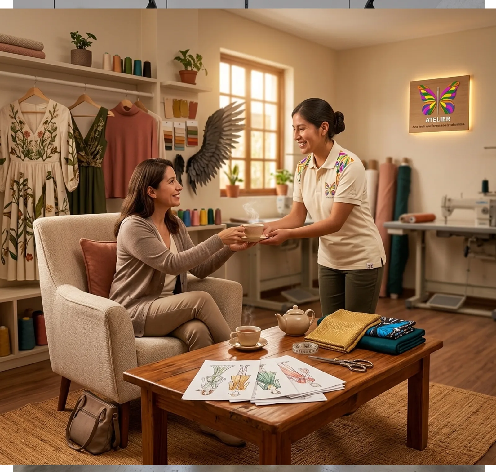
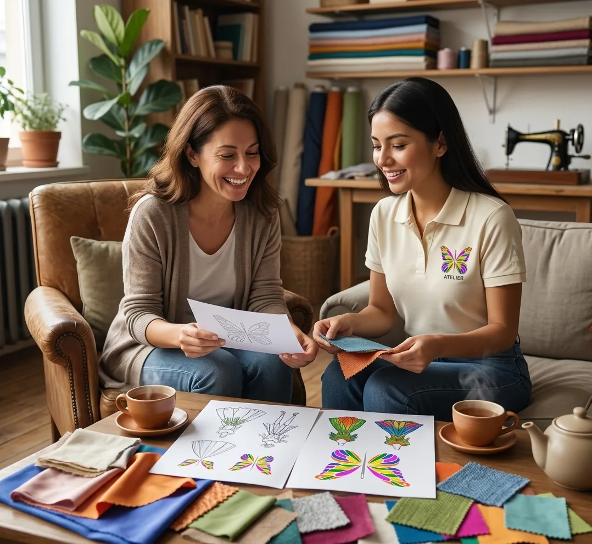
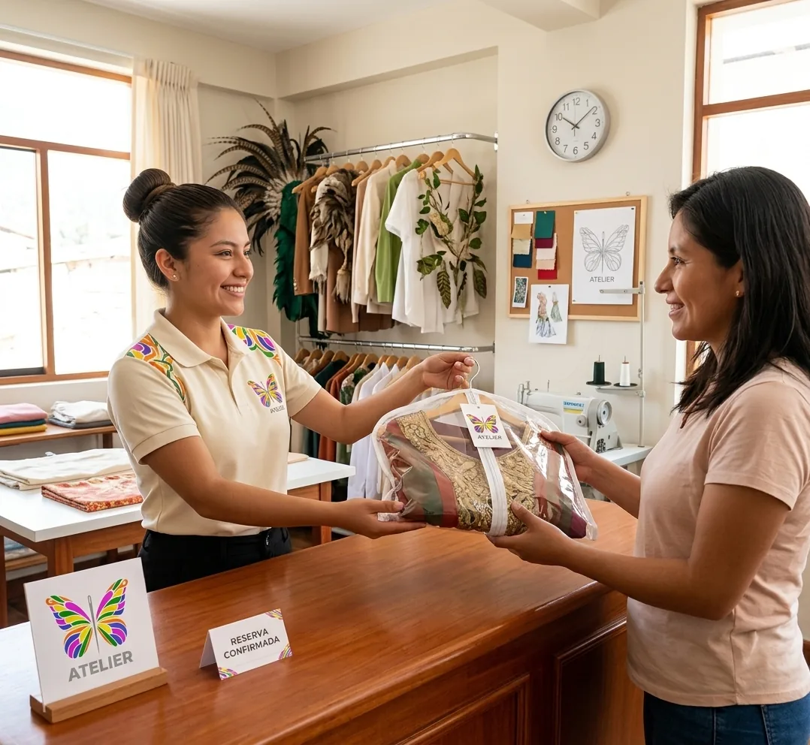
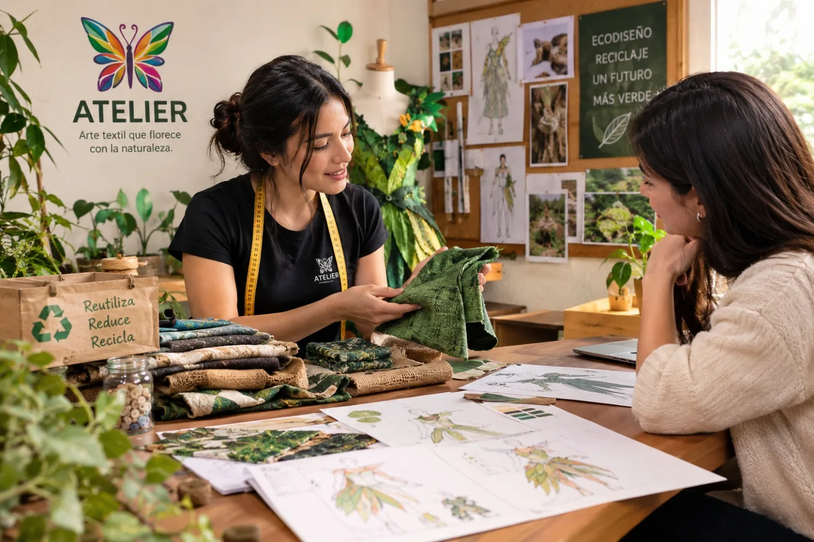
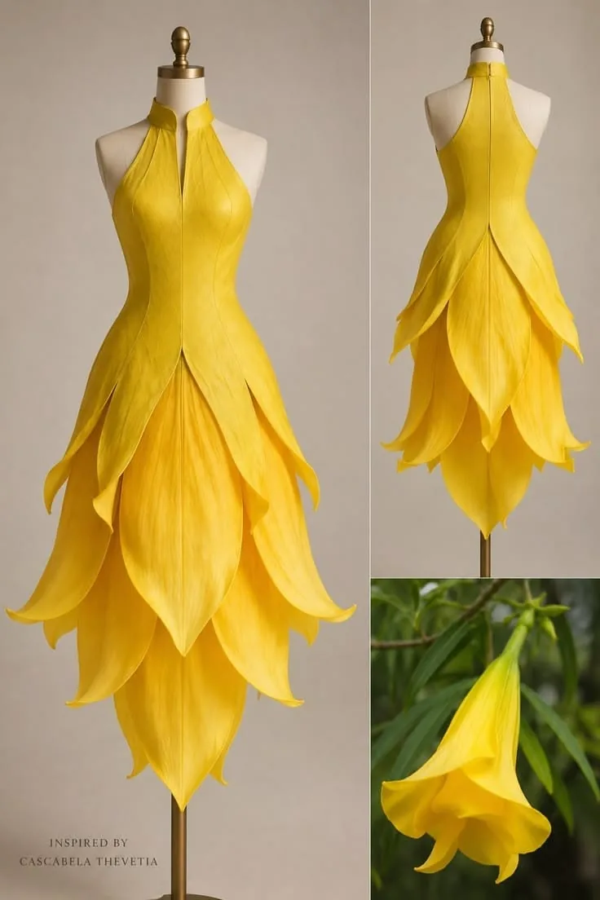
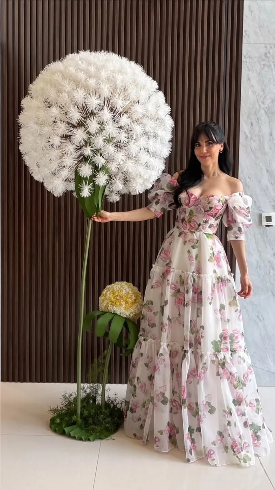
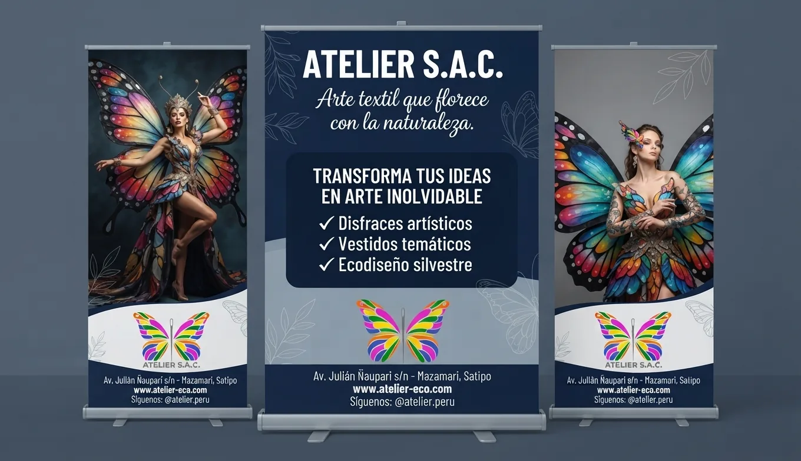

Confiable
Puntualidad en las entregas y prendas verificadas en buen estado.
Una marca profesional, cálida y creativa que cuida los detalles y el vínculo con las personas.

La imagen institucional debe sentirse coherente en el taller, las prendas, la atención y los canales digitales.
Puntualidad en las entregas y prendas verificadas en buen estado.
Acabados impecables, estructuras resistentes y materiales cuidados.
Atención amable, personalizada y accesible para la comunidad.
Conceptos vanguardistas y diseños que dialogan con tendencias actuales.
Un ambiente cálido donde el cliente puede sentirse cómodo.
Respeto ambiental, reutilización de materiales y valor del trabajo manual.

La experiencia ideal combina asesoría cercana, claridad en los acuerdos, cuidado de cada pieza y una entrega puntual. Atelier quiere ser recordada como un taller que transforma ideas en arte inolvidable e inspira respeto por la naturaleza.
Conoce nuestro tono de voz ↗Elige un rasgo y recorre 5 ejemplos. Cada uno tiene su espacio para una captura de conversación o una foto real.
Estas escenas y comentarios expresan la experiencia que se desea proyectar: creatividad, calidad artesanal, cercanía y respeto por la naturaleza.

Escuchar la idea del cliente, orientar la elección del vestuario y entregar las prendas a tiempo y en buen estado.

Costuras cuidadas, materiales seleccionados y estructuras ligeras que permiten lucir el diseño con comodidad.

La inspiración natural y la reutilización de materiales forman parte de la personalidad que Atelier quiere comunicar.
Esto es lo que queremos que sientan quienes ven nuestros diseños.

“¡Wao! ¡Qué nivel de arte! Me siento como un ángel oscuro súper empoderado. Estas alas son una locura total.”
El comentario destaca el impacto visual y la capacidad del vestuario para crear una experiencia memorable.

“¡Qué belleza total! Amé cómo este diseño captura la forma exacta de la flor en cada pétalo.”
Se valora la conexión entre moda, formas de la naturaleza y detalle artesanal.

“¡Impresionante! Ver cómo transforman materiales reciclados en un vestido tan increíble demuestra el verdadero poder del ecodiseño.”
El texto original relaciona la creatividad con el respeto por el planeta.

“¡Demasiado hermoso! Parezco sacada de un cuento de hadas con ese diente de león gigante.”
La reacción transmite fantasía y una conexión visual inolvidable con la naturaleza.
Escenarios y guiones del documento de marca que muestran los rasgos que Atelier desea transmitir.

Escenario: recepción del taller.
“Tenemos listo y completo tu vestuario, verificado y en perfecto estado”.
La atención puntual refuerza la tranquilidad del cliente.

Escenario: confección y control de calidad.
“Usamos estructuras livianas pero resistentes para que te muevas con comodidad”.
Los acabados, las costuras y los materiales deben reflejar cuidado profesional.

Escenario: sala de asesoría.
“Cuéntanos qué idea tienes para tu sesión o evento; estamos aquí para ayudarte”.
La escucha activa y el trato amable generan confianza.

Escenario: exhibición principal.
“Incorporamos mecanismos innovadores, como alas articuladas, y motivos botánicos”.
La innovación conecta los diseños con las tendencias actuales.
Escenario: rincón de descanso y consulta.
“Ponte cómoda; queremos que te sientas como en casa mientras conversamos”.
Un espacio cálido y una atención personalizada hacen sentir bienvenido al público.
Escenario: área de diseño sostenible.
“Reutilizamos retazos e incorporamos insumos reciclados sin sacrificar estética”.
El ecodiseño expresa el compromiso ambiental de Atelier.
Escenario: mesa de confección artesanal.
“Cada aplique y bordado está elaborado a mano para lograr un acabado único”.
El trabajo manual destaca el detalle, la autenticidad y la dedicación.
Los guiones se han resumido conservando su intención y los rasgos descritos en el documento de Atelier.